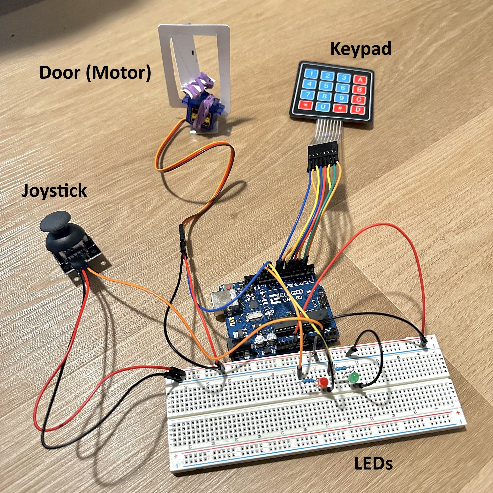
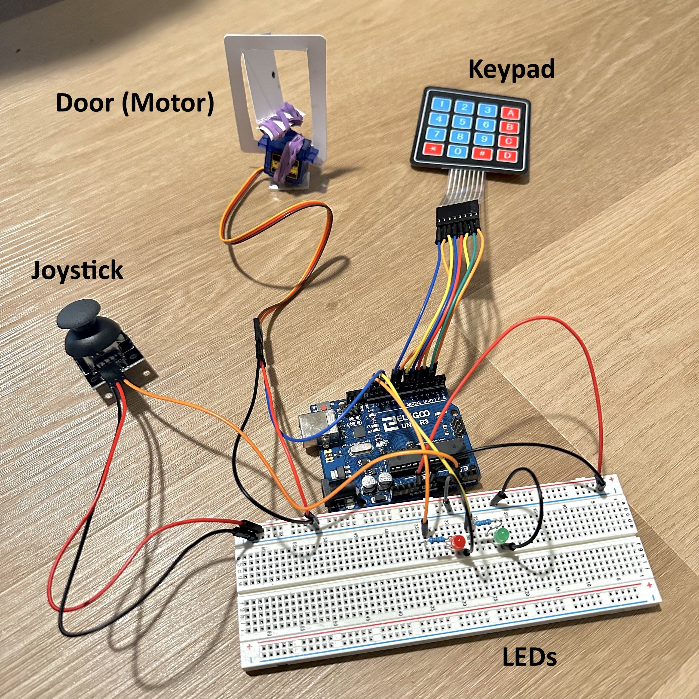
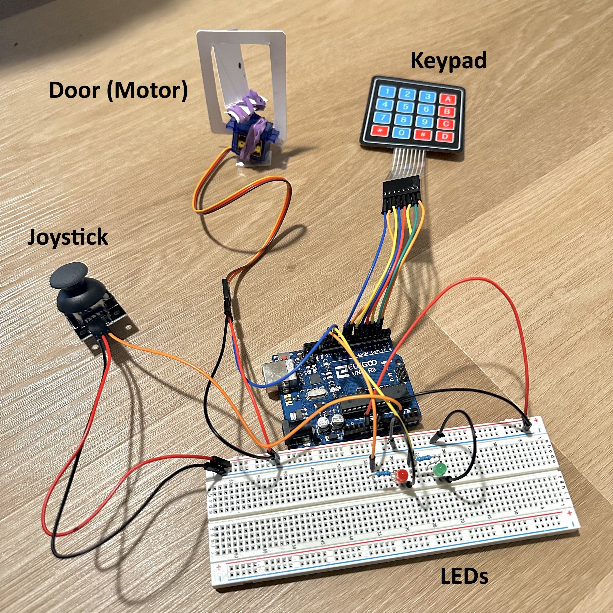
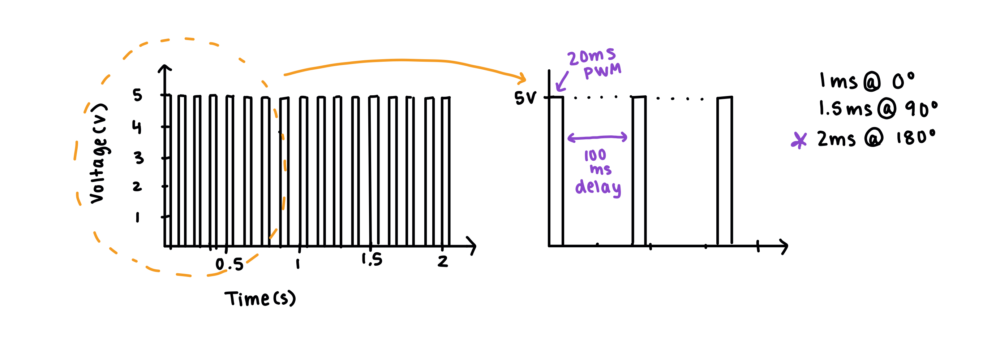

For this assignment, we were tasked to create a schematic, circuit, and code that uses parts from the kit that require a library. It needed to include both an
input part and an output part.
I chose to create a project with a joystick and keypad (inputs), as well as a servo and LED lights (outputs). The overall
system came together with a fake door I created, where the joystick and keypad were different ways to lock (close) and unlock (open) the door (servo).
The lights also corresponded to the lock position of the door.

The datasheet for green and red LED lights specify a 1.8 voltage drop. By using the formula V=I*R, where V = 5 - 1.8 and R = 220 Ohms,
the current results in about 14.54mA for each. This is under the maximum of 30mA current max for LEDs, so the resistor choice is justified.
Using the specifications for the membrane keypad, I learned about the division of columns and rows that associated with each possible
pin connection on this tool. In the code below, you can see the mapping of rows to pins 6-8, and columns to pins 2-5.
For the joystick, I only used the x-axis values in my code structure, and didn't use a SW pin, thus I only had three connections. The joystick
was used as an analog input as the VRX was connected to pin A1. Lastly, the servo motor was attached the pin 11.
Question One
Below is the graph example for a servo motor at pin 9 with the following code: for (int i=0, i<180, i++){servo.write(i); delay(100);}
Essentially, given the documetation of 20ms PWM period for a servo motor that has different duty cycles depending on the
angle and also a delay of 100ms in the code, a rectangle like structure is drawn on repeat. Within 2 seconds, I estimated how many times the code would loop
and it may not be drawn to exact scale.

Question Two
If my input device is leading to erroneous readings 1% of the time, the best way to address this is to not include those erroneous values.
A pseudocode description of fixing this is written below.
1. Collect input readings from the input device based on a calibration mapping system
2. Create an if statement that catches erroneous values outside of the calibration range values
3. Once caught, either re-assign the erroneous input value to a max or min within the accepted range
depending on what the value is, or discard the value by resetting the loop and reading the next input value.
Question Two
If my input device is slightly noisy, the best way to address this is by identifying whether the value is up or down by 10%, and filtering
it to a more reliable measurement value. A pseudocode description of fixing this is written below.
1. Collect input readings from the input device based on a calibration system, identifying the max and min values.
2. Monitors the incoming measurements and check if they deviate more than a certain threshold (which can be set to 10%). This
can be marked as potentially noisy.
3. Either disregard the noisy value if there is reason to believe it is too far an outlier, or replace it with a filtered value.
This new value replacement can be a compromise between the original value and a more reliable estimate.
/*
Libraries Assignment 4
This code begins by calibrating the joystick input. The sensor readings
during the first five seconds of the sketch execution define the minimum and
maximum of expected values attached to the sensor pin.
Then, the joystick can be used to move a servo back and forth (opening and closing the door).
Alterhanitvely, the door has a "passocde." When this passcode is entered into the keypad, the door opens.
The closes at the press of * or #.
*/
// Two libraries for the servo and the keypad
#include Servo.h
#include Keypad.h
// Declare Servo and Keypad objects
Servo ServoMotor;
// Password for keypad entry - password may be different in video as I tried different 3 character values
char password[] = "25A";
// Position tracker for keypad entry
int position = 0;
// Keypad setup
const byte ROWS = 4; // define 4 row matric
const byte COLS = 4; // define 4 column matrix
char keys[ROWS][COLS] = { // this is the exact layout of the keypad I am using
{ '1', '2', '3', 'A' },
{ '4', '5', '6', 'B' },
{ '7', '8', '9', 'C' },
{ '*', '0', '#', 'D' }
};
// Define pin connections for keypad
byte rowPins[ROWS] = { 9, 8, 7, 6 }; // the row pins on keypad
byte colPins[COLS] = { 5, 4, 3, 2 }; // the column pins on keypad
// Mapping the keypad keys to the pins I connected to
Keypad keypad = Keypad(makeKeymap(keys), rowPins, colPins, ROWS, COLS);
// Define pin connections for LEDs
int RedpinLock = 13; // denotes door "closed"
int GreenpinUnlock = 12; // denotes door "opened"
// Define analog pins for joystick (didn't use Yaxis)
int joyX = A1;
// Calibration variables
int joyXMin = 0;
int joyXMax = 1023;
void setup() {
// Begin serial communication for debugging
Serial.begin(9600);
// Set output pin modes for LEDs
pinMode(RedpinLock, OUTPUT);
pinMode(GreenpinUnlock, OUTPUT);
// Attach Servo to pin 11
ServoMotor.attach(11);
// Call the joystick calibration
calibrateJoystick();
// Initialize system in a locked position
LockedPosition(1);
}
void loop() {
// Read X-axis value from joystick
int xAxisValue = analogRead(joyX);
// Apply calibration to the joystick reading
xAxisValue = constrain(xAxisValue, joyXMin, joyXMax);
xAxisValue = map(xAxisValue, joyXMin, joyXMax, 0, 1023);
// Test prints of the joystick xValues to understand a good range
Serial.print("Joystick Xvalue:");
Serial.println(xAxisValue);
// Map joystick values to servo angles
if (xAxisValue > 800) {
LockedPosition(1); // Lock the system if less than 800
}
if (xAxisValue < 200 ) {
LockedPosition(0); // Unlock the system if greater than 200
}
// Check for key presses on the keypad
char key = keypad.getKey();
// Process keypad input
if (key) {
// Test prints of the current key values to make sure inputs are correct
Serial.print("Current Key: ");
Serial.println(key);
// Check for special keys '*' and '#'
if (key == '*' || key == '#') {
position = 0; // position variable should only increment for password
LockedPosition(1); // Lock the system if special keys are pressed
} else if (key == password[position]) {
position++; // update position value if the entered key is correct
} else {
position = 0; // Reset position if the entered key is incorrect
}
// Check if the correct password is entered (ie key at position was correct three times in a row)
if (position == 3) {
LockedPosition(0); // Unlock the system since password is correct
}
}
// Delay to control loop speed
delay(100);
}
// Function to set system position (close door or open door) based on the locked parameter
void LockedPosition(int locked) {
if (locked == 1) {
digitalWrite(RedpinLock, HIGH); // red pin on indicates closed door
digitalWrite(GreenpinUnlock, LOW); // green pin off indicates closed door
ServoMotor.write(0); // Move servo to 0 degrees (locked position)
} else {
digitalWrite(RedpinLock, LOW); // red pin off indicates open door
digitalWrite(GreenpinUnlock, HIGH); // green pin on indicates open door
ServoMotor.write(90); // Move servo to 90 degrees (unlocked position)
}
}
// Joystick calibration function
void calibrateJoystick() {
// Calibrate during the first five seconds
Serial.println("Calibrating Joystick. Move the joystick to its extremes within 5 seconds.");
unsigned long calibrateEndTime = millis() + 5000;
// complete loop until calibration time is over
while (millis() < calibrateEndTime) {
// read values as person moves the joystick on the x axis
int xAxisValue = analogRead(joyX);
// Record the maximum joystick value
if (xAxisValue > joyXMax) {
joyXMax = xAxisValue;
}
// Record the minimum joystick value
if (xAxisValue < joyXMin) {
joyXMin = xAxisValue;
}
}
// Print when completed calibrating
Serial.println("Joystick calibration complete.");
}